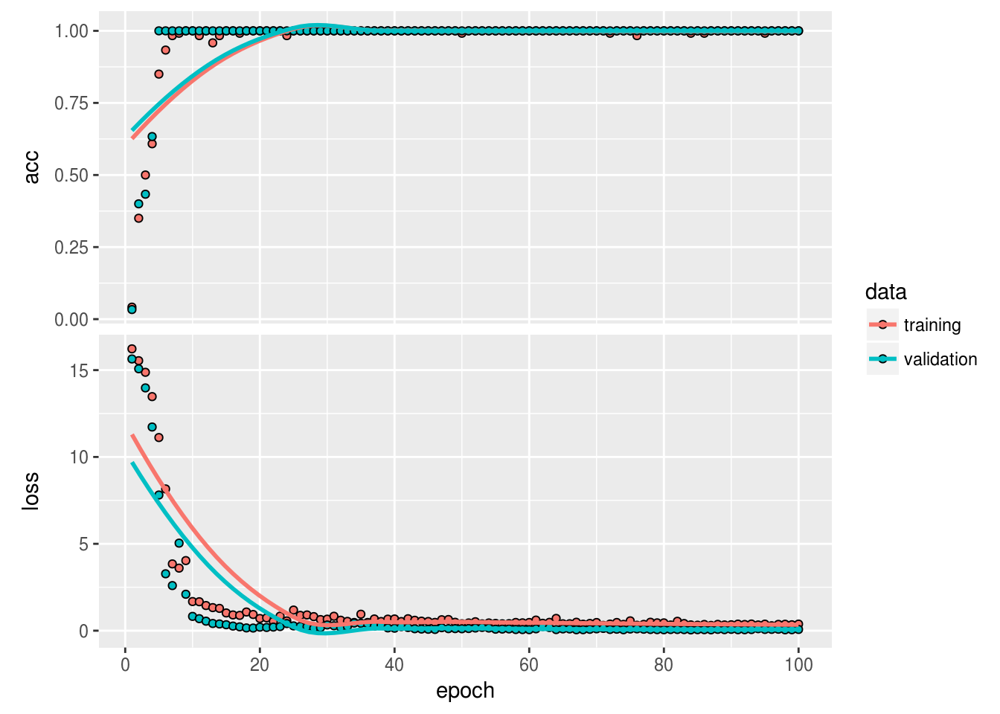
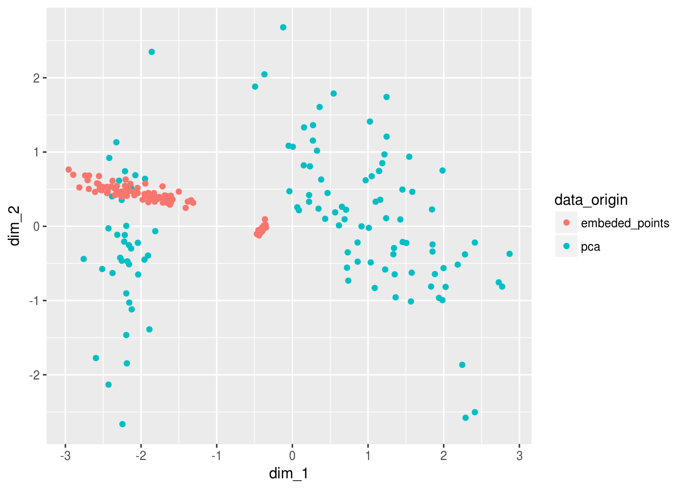

Let's play with autoencoders (Keras, R)
library(ggplot2)
library(keras)
library(tidyverse)## ── Attaching packages ──────────────────────────────────────────────────── tidyverse 1.2.1 ──## ✔ tibble 1.4.2 ✔ purrr 0.2.4
## ✔ tidyr 0.8.0 ✔ dplyr 0.7.4
## ✔ readr 1.1.1 ✔ stringr 1.3.0
## ✔ tibble 1.4.2 ✔ forcats 0.3.0## ── Conflicts ─────────────────────────────────────────────────────── tidyverse_conflicts() ──
## ✖ dplyr::filter() masks stats::filter()
## ✖ dplyr::lag() masks stats::lag()What are autoencoders?
The main purpose of an encoder is to map high dimensional data into lower dimensional data by minimizing the loss of decoding accuracy.
How is that different from dimensionality reduction?
Well.. it is and it isn’t… In it’s simplest case the neural network can use basicly linear activation functions to approximate a PCA. The important thing is that it is an approximation.
Autoencoders are not unsupervised learning algorithms, instead they are self-learning algorithms since the network will try to replicate itself from lower dimensional space. In this sense the net will not really extract those features that are usefull to understand the data as much as it will extract the most important features to reproduce the data.
We can however perform dimensionality reduction if we redefine the loss function however:
https://github.com/kylemcdonald/Parametric-t-SNE/blob/master/Parametric%20t-SNE%20(Keras).ipynb
In that great python notebook the author kylemcdonald defines a t-sne loss function in python and uses it to perform autoencoding via t-sne.
How do we build them?
We can build one quite simply by defining the encoding layers and the decoding layers;
Initially people did this by defining a simple symmetrical neural network like this:

The initial half was responsible for encoding into lower dimensional space and the decoder was responible for mapping it back again to validate information loss.
In practice the network does not need to be symmetrical at all and can be more complicated such as having CNN layers for image encoding.
Build it
OK, so let’s show how the autoencoder is built by defining the encoder and decoder
Step 1 - load and prepare the data
For the initial example we will use the iris dataset as our hello world showcase
Split test train
split_ind <- iris$Species %>% caret::createDataPartition(p = 0.8,list = FALSE)
train <- iris[split_ind,]
test <- iris[-split_ind,]Pre-process
Note, normally you would need to perform one-hot encoding for the classes but since we are not going to train the model to classify this isn’t really needed…
train_X <- train[,1:4] %>% as.matrix()
train_y <- train[,5] %>%
keras::to_categorical()
test_X <- test[,1:4] %>% as.matrix()Step 2 - define the encoder and decoder
It’s the encoder’s job to embed the data into lower dimensional space. So logically it should map from the initial input dimensions to the specified number of perceptrons in the output layer as new dimensions:
Notice that we define the different parts seperately because we are going to use the keras functional api instead in order to keep the individual models encoder and decoder
input_layer <-
layer_input(shape = c(4))
encoder <-
input_layer %>%
layer_dense(units = 150, activation = "relu") %>%
layer_dropout(rate = 0.2) %>%
layer_dense(units = 50, activation = "relu") %>%
layer_dropout(rate = 0.1) %>%
layer_dense(units = 25, activation = "relu") %>%
layer_dense(units = 2) # 2 dimensions for the output layer
decoder <-
encoder %>%
layer_dense(units = 150, activation = "relu") %>%
layer_dropout(rate = 0.2) %>%
layer_dense(units = 50, activation = "relu") %>%
layer_dropout(rate = 0.1) %>%
layer_dense(units = 25, activation = "relu") %>%
layer_dense(units = 4) # 4 dimensions for the original 4 variablesStep 3 - compile and train the autoencoder
To train the encoder we need to capture the initial input as our goal and back-propogate to best represent it
We treat this as a basic regression so we will use some arbitrary regression loss function (nothing fancy like t-sne)
autoencoder_model <- keras_model(inputs = input_layer, outputs = decoder)
autoencoder_model %>% compile(
loss='mean_squared_error',
optimizer='rmsprop',
metrics = c('accuracy')
)
summary(autoencoder_model)## ___________________________________________________________________________
## Layer (type) Output Shape Param #
## ===========================================================================
## input_1 (InputLayer) (None, 4) 0
## ___________________________________________________________________________
## dense_1 (Dense) (None, 150) 750
## ___________________________________________________________________________
## dropout_1 (Dropout) (None, 150) 0
## ___________________________________________________________________________
## dense_2 (Dense) (None, 50) 7550
## ___________________________________________________________________________
## dropout_2 (Dropout) (None, 50) 0
## ___________________________________________________________________________
## dense_3 (Dense) (None, 25) 1275
## ___________________________________________________________________________
## dense_4 (Dense) (None, 2) 52
## ___________________________________________________________________________
## dense_5 (Dense) (None, 150) 450
## ___________________________________________________________________________
## dropout_3 (Dropout) (None, 150) 0
## ___________________________________________________________________________
## dense_6 (Dense) (None, 50) 7550
## ___________________________________________________________________________
## dropout_4 (Dropout) (None, 50) 0
## ___________________________________________________________________________
## dense_7 (Dense) (None, 25) 1275
## ___________________________________________________________________________
## dense_8 (Dense) (None, 4) 104
## ===========================================================================
## Total params: 19,006
## Trainable params: 19,006
## Non-trainable params: 0
## ___________________________________________________________________________Now we train onto itself:
history <-
autoencoder_model %>%
keras::fit(train_X,
train_X,
epochs=200,
shuffle=TRUE,
validation_data= list(test_X, test_X)
)The training seems to have gone pretty well:
plot(history)
So now that we believe we have trained our encoder to embed the data into lower dimensional space, let’s actually look at this data…
Visualize the embedding
First we can use the complete model to visualize the reproduced points vs the actual points
reconstructed_points <-
autoencoder_model %>%
keras::predict_on_batch(x = train_X)
Viz_data <-
dplyr::bind_rows(
reconstructed_points %>%
tibble::as_tibble() %>%
setNames(names(train_X %>% tibble::as_tibble())) %>%
dplyr::mutate(data_origin = "reconstructed"),
train_X %>%
tibble::as_tibble() %>%
dplyr::mutate(data_origin = "original")
)
Viz_data %>%
ggplot(aes(Petal.Length,Sepal.Width, color = data_origin))+
geom_point()
OK.. so this isn’t quite as sexy as I wanted… The lossy reconstruction is effectively just linear components. I expected the embedding to use linear compositions since we were activating the perceptrons using a regularized linear activation function (relu); the decoder seems to map these back linearly aswel when it returns to the higher dimensions which makes perfect sense…
What we can do is try to use non-linear activation functions… IF we wanted to reconstruct the data better, or use a more advanced loss function…
Step 4 - Extract the weights of the encoder
Once we have decided on the autoencoder to use we can have a closer look at the encoder part only. There are various ways to do this but what I will do is extract the weights from the autoencoder and use them to define the encoder.
autoencoder_weights <-
autoencoder_model %>%
keras::get_weights()
# autoencoder_weightsWe can see that our encoder stops at the 6th layer… Since it produces the 2 dimensional output there.
We can also inspect the types of these variables:
autoencoder_weights %>% purrr::map_chr(class)## [1] "matrix" "array" "matrix" "array" "matrix" "array" "matrix"
## [8] "array" "matrix" "array" "matrix" "array" "matrix" "array"
## [15] "matrix" "array"Save the weights
keras::save_model_weights_hdf5(object = autoencoder_model,filepath = '../../static/data/autoencoder_weights.hdf5',overwrite = TRUE)Step 5 - Load up the weights into an ecoder model and predict
We can now specify a brand new model, BUT we can use the layers we have already defined to specify only the input layer and the encoder…
Now we only load up the weights by specifying the by_name argument so that the layer encoder inherits the weights without bothering with the decoder layer.
encoder_model <- keras_model(inputs = input_layer, outputs = encoder)
encoder_model %>% keras::load_model_weights_hdf5(filepath = "../../static/data/autoencoder_weights.hdf5",skip_mismatch = TRUE,by_name = TRUE)
encoder_model %>% compile(
loss='mean_squared_error',
optimizer='rmsprop',
metrics = c('accuracy')
)Compare to pca
OK great! Now we can use the predict function with the new encoder model to see just how this encoder has embeded the higher dimensional data in 2 dimensions:
embeded_points <-
encoder_model %>%
keras::predict_on_batch(x = train_X)
embeded_points %>% head## [,1] [,2]
## [1,] -2.690584 2.761996
## [2,] -2.502537 2.562161
## [3,] -2.464878 2.445349
## [4,] -2.688922 2.767783
## [5,] -2.892215 2.901564
## [6,] -2.533939 2.570662To compare this we also create a pca using the caret package:
pre_process <- caret::preProcess(train_X,method = "pca",pcaComp = 2)
pca <- predict(pre_process,train_X)
pca %>% head## PC1 PC2
## 1 -2.189384 0.5217673
## 3 -2.303264 -0.2652904
## 4 -2.244919 -0.5131788
## 5 -2.303865 0.6851419
## 6 -1.975288 1.4867733
## 7 -2.364204 0.1111445Viz_data_encoded <-
dplyr::bind_rows(
pca %>%
tibble::as_tibble() %>%
setNames(c("dim_1","dim_2")) %>%
dplyr::mutate(data_origin = "pca"),
embeded_points %>%
tibble::as_tibble() %>%
setNames(c("dim_1","dim_2")) %>%
dplyr::mutate(data_origin = "embeded_points")
)
Viz_data_encoded %>%
ggplot(aes(dim_1,dim_2, color = data_origin))+
geom_point()
We can tell that the PCA and encoders produce VERY different results… But we should remember that the purpose of the encoder and it’s loss function was to embed the information into lower dimensions - so ultimately we should compare predictive properties…
Measure prediction accuracy
benchmark <-
Viz_data_encoded %>%
mutate(Species = train$Species %>% rep(times = 2)) %>%
group_by(data_origin) %>%
nest() %>%
# mutate(model_lm = data %>% map(glm,formula = Species~., family = binomial())) %>%
# mutate(performance = model_lm %>% map(broom::augment)) %>%
# unnest(performance,.drop = FALSE)
mutate(model_caret = data %>% map(~caret::train(form = Species~.,data = .x,method = "rf"))) ## note: only 1 unique complexity parameters in default grid. Truncating the grid to 1 .## Loading required package: lattice##
## Attaching package: 'caret'## The following object is masked from 'package:purrr':
##
## lift## note: only 1 unique complexity parameters in default grid. Truncating the grid to 1 .benchmark## # A tibble: 2 x 3
## data_origin data model_caret
## <chr> <list> <list>
## 1 pca <tibble [120 × 3]> <S3: train>
## 2 embeded_points <tibble [120 × 3]> <S3: train>for(i in seq_along(benchmark$model_caret)){
print(benchmark$data_origin[[i]])
print(benchmark$model_caret[[i]])
}## [1] "pca"
## Random Forest
##
## 120 samples
## 2 predictors
## 3 classes: 'setosa', 'versicolor', 'virginica'
##
## No pre-processing
## Resampling: Bootstrapped (25 reps)
## Summary of sample sizes: 120, 120, 120, 120, 120, 120, ...
## Resampling results:
##
## Accuracy Kappa
## 0.9372804 0.9047581
##
## Tuning parameter 'mtry' was held constant at a value of 2
## [1] "embeded_points"
## Random Forest
##
## 120 samples
## 2 predictors
## 3 classes: 'setosa', 'versicolor', 'virginica'
##
## No pre-processing
## Resampling: Bootstrapped (25 reps)
## Summary of sample sizes: 120, 120, 120, 120, 120, 120, ...
## Resampling results:
##
## Accuracy Kappa
## 0.9881885 0.98217
##
## Tuning parameter 'mtry' was held constant at a value of 2Absolutely crazy…
The embedding done by the encoder was clearly more useful for actual prediction, even though the encoded metrics seemed very lossy. My interpretation of this is that the encoder kept only those features it believed important to represent the original data linearly as apposed to the pca’s loss function which tried to optimize the principle components for explaining variability…
In summary the autoencoder for the iris dataset believes after training that most of the variation in the imput dimensions are just ‘noise’ and that the lossy linear reconstruction is actually better at predicting Species than a standard PCA performed by the caret package?
Conclusion
- Encoders do well if we are preparing high dimensional data for some regression model or deep learning model.
- Encoders cannot replace dimensionality reduction techniques for visualizing high dimensional features unless a very well defined loss function is used together with a well tuned network
- Encoders are very good at reconstructing data without “noise”